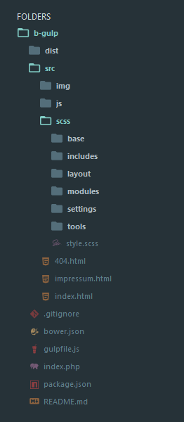

§Sublime Text
Packages
These are the packages I find the most useful. Package Control makes them easy to install and improves your workflow by a lot.
Package Control
Emmet
Sidebar Enhancements
Bracket Highlighter
Alignment
Git
SCSS
AutoFileName
Advanced New File
Color Picker
Shortcuts
Here are some very useful shortcuts I use all the time. I'm working on Windows, but for Mac they should be about the same when using Cmd instead of Ctrl.
| Ctrl + Shift + D | Copy and paste the current line. |
| Ctrl + Shift + G | Wrap the current selection with an HTML-Tag. |
| Alt + . | Close the preceding open tag. |
| Ctrl + K, Ctrl + B | Show/hide the sidebar. |
| Ctrl + D | Find and expand the current selection. |
| Ctrl + Shift + V | Paste and indent. |
| Ctrl + Shift + Up/Down | Move the current line/selection up/down. |
| Ctrl + G | Jump to a specific line number. |
| Ctrl + P | Go to a specific file. |
| Ctrl + L | Select line. |
| Ctrl + Shift + A | Expand selection to brackets. |
Settings
These are some of the user settings I added under Preferences > Settings-User.
| "bold_folder_labels": true | The folder labels in your sidebar are displayed in bold, making them more distinguishable from the files. |
| "highlight_modified_tabs": true | Highlight tabs that have not been saved yet. |
| "scroll_past_end": true | Enables you to scroll past the last line of your file. |
| "match_brackets": true | Match your open bracket directly with a closing one while typing. |
| "tab_size": 4 | This underlines your indentations a bit more. |
| "trim_trailing_white_space_on_save": true | Your whitespaces will be trimmed on save. |
| "folder_exclude_patterns": [".sass-cache", "node_modules", ".git"] | This will ignore some folders and files when pressing Ctrl+P to search for a file. |
Theme
Here's the theme I use. It's a flat theme that comes with a nice color scheme as well:
Theme Spacegray
And my color scheme. I modified the base-16 color scheme, you can find it here:
Color Scheme
§Boilerplate
The boilerplate I use is based on the HTML5 boilerplate. I modified it and added my personal folder structure to suit my needs. It is available on Github.
Basic Boilerplate
Structure
Working with Grunt and trying to use a meaningful CSS naming and structuring methodology I came up with the following folder structure:
The src folder is for development only, where you can find all of the SCSS code, uncompressed JavaScript and uncompressed images or placeholders used for development.
The dist folder is the one you upload on a server when deploying your project. Here are all minified and compressed files and images, automatically created by Grunt.
Note: When creating a new *.html file in the src folder, you have to edit the Gruntfile.js. Simply add your new file under htmlmin > files:

Here you can read more about CSS naming methodologies:
SMACCS
BEM
Gruntfile
This is how my Gruntfile.js looks like.
Gruntfile.js
It handles the SCSS preprocessing, hints mistakes in my JavaScript code, minifies the HTML, CSS and JavaScript and puts the output in the dist/, dist/css and dist/js folders. The only thing I have to do when I start coding is to navigate to the project folder and type grunt or grunt watch in the command line.
I switched to ConEmu as an alternative to the Windows Console, adding some really neat features like tabs and colors. It can be found here:
ConEmu
§Grunt
These are the steps for installing Grunt when using my basic boilerplate:
| npm install -g grunt-cli | Install the grunt command line interface globally on your pc. |
| npm init | Go to your project folder and create a package.json file (not needed when using my boilerplate). |
| npm install -S grunt | Install the grunt dev dependendy. |
| npm install | Install the dev dependencies specified in your package.json file. |
| npm install grunt-postcss pixrem autoprefixer cssnano | Install the postcss plugins. |
For any further information go to the Grunt website or follow this great tutorial: